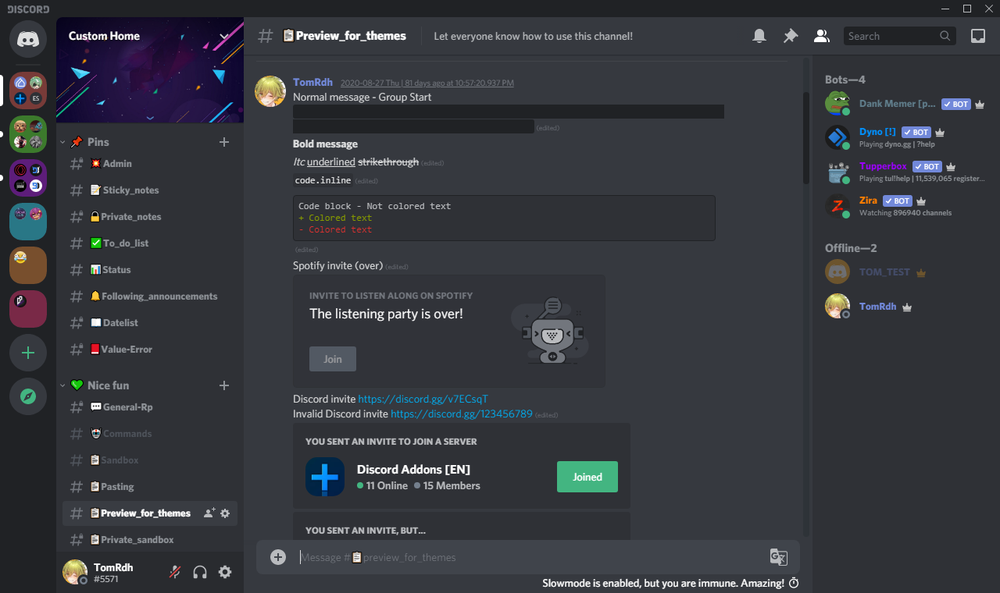

Themes - Discord Addons
Theme previews, hover to an image to resize it. Here (only in this page),
To download and install a theme on BBD, click on "Download" links, click "Raw", save with Ctrl + S in the themes folder.
Theme previews, hover to an image to resize it. Here (only in this page),
To download and install a theme on BBD, click on "Download" links, click "Raw", save with Ctrl + S in the themes folder.
Do you know the hidden AMOLED dark theme on Android with the full black background? Just click 10 times on "Dark theme" in your appearance settings! But you want this theme on PC but it's unavailable? Great news, now it's available! You can download this theme and enjoy using the AMOLED dark theme on PC!
This is the same theme at 90% than AmoledDarkTheme, the Optimized version changes all backgrounds to full dark.

Allows you to see what buttons you have for each channel without hovering on it. Useful to test some channel settings.
BandagedBD (currently the v3.5) is not optimized with the light theme. This minitheme optimizes colors that have been set for the dark theme. Do not use it with another theme (except AmoeldDarkTheme)!

This mini-theme allows you to hide your email adress when you enter in User Settings and makes your email more private. Hover on the email to reveal it. Similar theme: YouTubeBlurEmails.

Compact Channellist and Memberlist. This is a customizable theme, you can change some variables in the theme file.

You don't like the new Discord update that changed background colors when you hover on an option in a contextmenu? This theme allows you to go back to the old contextmenus update. This doesn't break any plugin, it changes only some colors just for appearance.

Allows you to change the font used in all your Discord interface and the font for codelines/codeblocks. Similar theme: CustomFontForBrowser.

Currently a minitheme, but can be later a fulltheme. It modifies some elements like border radiuses for buttons and shadow for texts. It's recommended to use it only with:

Hides the Nitro channel in DMs, but you can use Alt + Up/Down Arrows shortcuts (for Windows) to access to it.

Moves the serverlist at the bottom, like Guilded.

Are you bored with the small space that Discord allows in textareas when you're writing long messages? This customizable theme allows you to modify the max height. You'll have more text shown in your textarea!

Moves the "Someone is typing…" and some other things at the top of the textarea.

A bit complex to understand, but it allows you to highly customize some parts of your UI, and with some other settings.
Did you see a difference between a theme preview and your one? Or did you see something recently changed? You can see what exactly changed here.